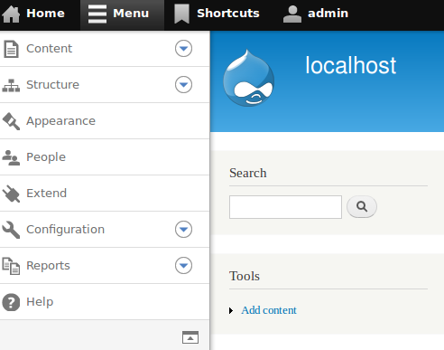
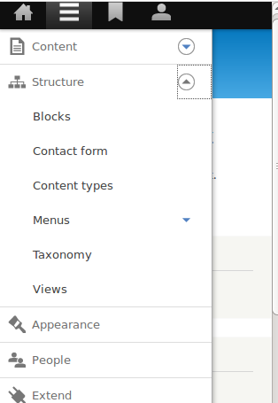
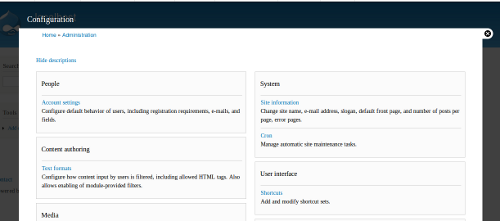
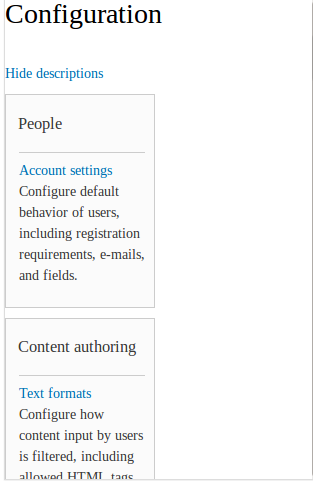
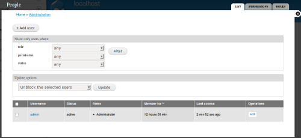
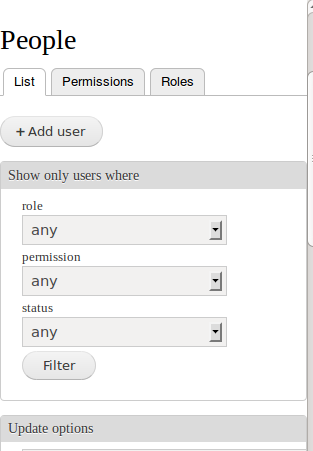
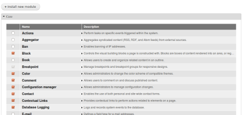
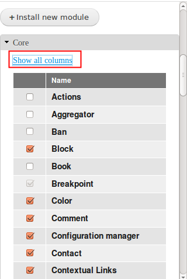
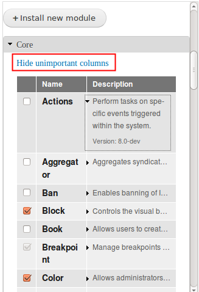

© 2013 CrossFunctional | PH: +61 (02) 800 800 99 | ABN: 971 5541 8125
In my previous blog post The Latest in Mobile for Drupal 8 - Oct 2012 [1], I briefly touched on how the responsive toolbar was going to look in Drupal 8.
It was only a prototype then, but last night I installed the Drupal 8 was quite taken back how slick and responsive the new admin toolbar is.
Here are some screenshots on how it will look.
Full size
Full size - toolbar expanded

This does not dipsplay in screenshots, but on far right on the expanded bar there is a toogle icon 
When expanded, this will move your admin bar to the left as displayed below.

This is also how the menu appears in 320x 480 mobile

Configuration section
Full Size

Mobile 320x 480

People
Full Screen

Mobile - 320x480

Extend (a.k.a Modules in D7)
Full size

Mobile 240x480
 
All of this would have not been possible without the the time and effort given by the memebers of the community. Thank you to all those involved.
© 2013 CrossFunctional | PH: +61 (02) 800 800 99 | ABN: 971 5541 8125
Links:
[1] http://crossfunctional.net/blog/2012/oct/latest-mobile-drupal-8-oct-2012
[2] http://crossfunctional.net/tags/drupal-planet